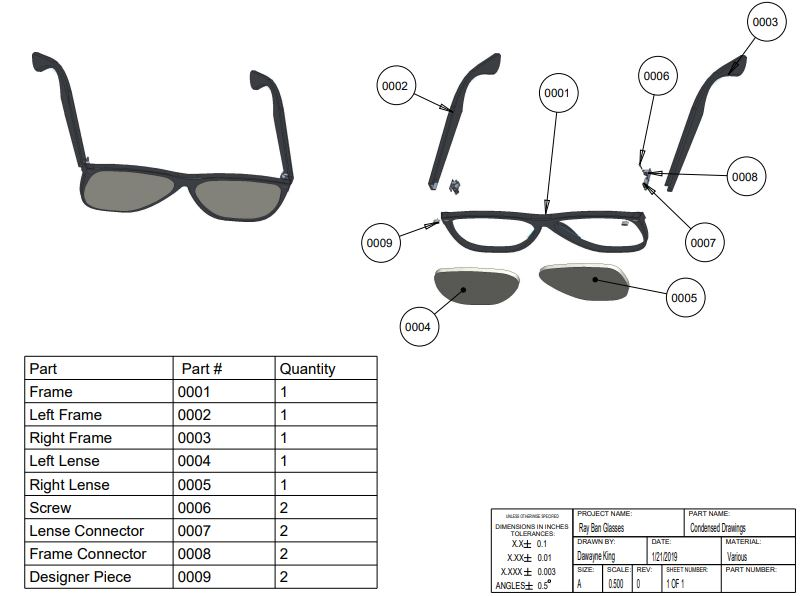
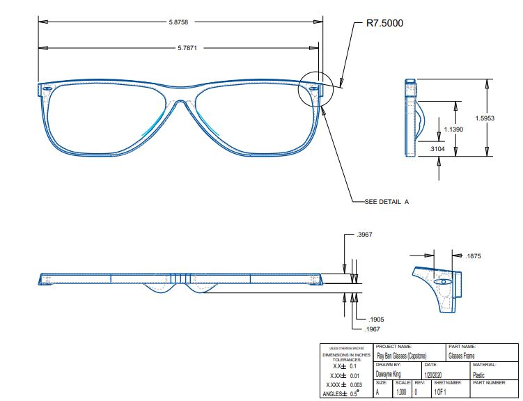

Soap Bottle Capstone
Engineering Drawings
In this section, you can view images for CAD Design of a soap bottle that I modeled. This was an actual soap bottle, in which I measured everything with a caliper, and created the dimensions on Pro Engineer. The capstone was one of the more rigorous CAD Designs I had to complete, which entailed hand drawings and dimensioned sketches; and students - including myself, had to submit an identical replica of an engineering drawing for a mechanical device (Soap Bottle)

